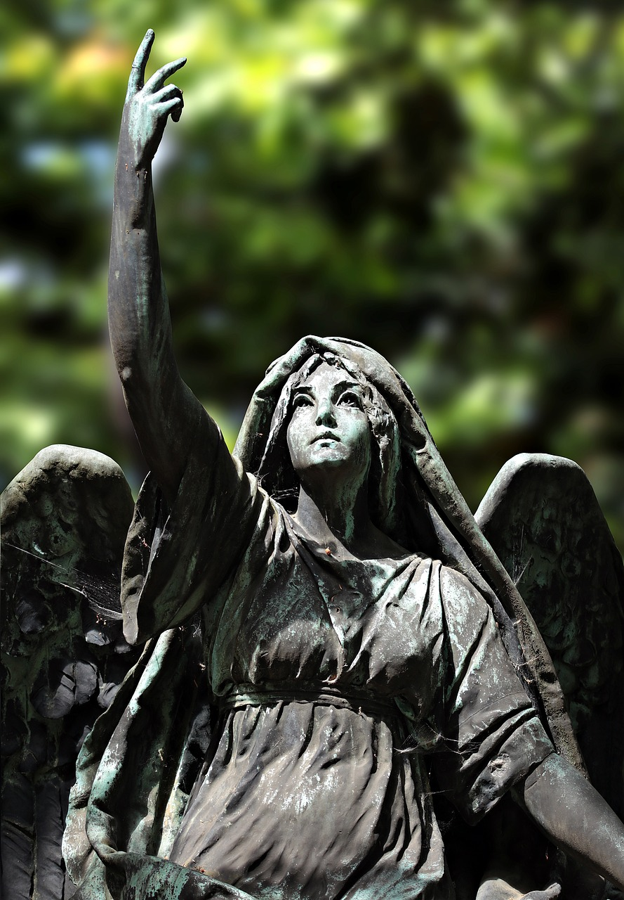

100. výročie Trianonskej mierovej zmluvy
PRI PRÍLEŽITOSTI 100. VÝROČIA PODPÍSANIA TRIANONSKEJ MIEROVEJ ZMLUVY SA NAŠA NADÁCIA ROZHODLA POSTAVIŤ PAMÄTNÍK.
Vzhľadom na aktuálne prijaté opatrenia s ochorením COVID-19 sme žiaľ nútení odsunúť plánované Slávnostné odhalenie pamätníka “Trianon-100 rokov” v Komjaticiach 8.10.2020. Budeme veľmi radi, ak sa nám odsunutú slávnosť podarí uskutočniť ešte tohto roku. O plánovanom novom termíne Vás budeme informovať ihneď, ako to bude možné realizovať.
PAMÄTNÍK 100. VÝROČIA TRIANONSKEJ MIEROVEJ ZMLUVY
Tento pamätník má byť vďakou našim predkom a všetkým zúčastneným predstaviteľom štátov, ktorí podpisom tejto zmluvy odčinili krivdy páchané na našom národe a touto zmluvou medzinárodného významu boli stanovené južné hranice Slovenska.
Tento pamätník má byť aj pripomienkou pre nás a naše budúce generácie, kde a kto rozhodol o našej slobode.
Tento pamätnik má rovnako slúžiť aj ako pamätník mieru, lebo len vďaka Trianonskému usporiadaniu stredoeurópskych pomerov je zachovaná stabilita regiónu.
Stavebná časť: realizátor Stavmex Komjatice sro, 32 173,68 Eur
Propagácia a organizačné zabezpečenie:
Cena zhotovenia umeleckého diela: 20 000,- Eur
Odmena autorovi: akad.soch. Margaréta Horáková, 12 000,- Eur
Technické zabezpečenie : obec Komjatice
Prostriedky vyzbierané nad rámec rozpočtu na pamätník budú v zmysle zákona použité na rozvoj a ochranu duchovných hodnôt.
Naša nadácia sa na uskutočnenie tohto význačného diela rozhodla vzhľadom na jej finančnú náročnosť usporiadať celonárodnú zbierku a zapojiť tak každého člena slovenského národa do jeho realizácie a stať sa účastným tejto historickej udalosti.
Verím, že každý komu záleží na budúcnosti našej krajiny prispeje malou čiastkou a stane sa tak súčasťou tohto odkazu. Týmto pamätníkom rovnako chceme vyjadriť svoju lásku k slovenskej zemi a jej nedeliteľnosti od Dunaja k Tatrám.
Je historickou pravdou, že porušením tejto mierovej zmluvy došlo k prenasledovaniu slovenského obyvateľstva, holokaustu židovských a rómskych spoluobčanov a iných menšín. A to rovnako aj na území prvej Slovenskej republiky. Sme presvedčení, že sa poučíme z histórie a nedovolíme, aby sa toto viac zopakovalo.
Dielo bude inštalované v Komjaticiach na južnom Slovensku pri obecnom úrade.
PODPORTE NÁS FINANČNE
zapojte sa do celonárodnej zbierky na realizáciu pamätníka
PAMÄTNÍK 100. VÝROČIA PODPÍSANIA TRIANONSKEJ MIEROVEJ ZMLUVY
Vzhľadom na momentálnu situáciu v súvislosti s opatreniami vlády je transparentný účet dočasne uzavretý. Pevne veríme, že v zbierke budeme spoločne pokračovať, keď to situácia dovolí. Za finančné dary, ktoré ste nám doposiaľ na realizáciu pamätníka poslali, Vám zo srdca ďakujeme.